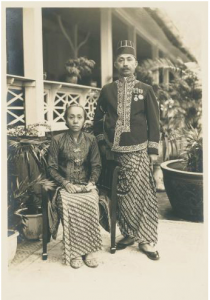

Latar Belakang "Batang"

Raden Mas Adipati Ario Dhipokoesoemo dan Raden Ajoe, 1930, dok.
KITLV Digital Media Library(http://media-kitlv.nl)
Asal usul nama BATANG Menurut kamus Kawi-Indonesia karangan Prof.
Drs. Wojowasito, Batang berarti : (1) Plataran, (2) Tempat yang
dipertinggi, (3) Dialahkan, (4) Kata bantu bilangan. Dalam bahasa
Indonesia (juga bahasa Melayu) berarti sungai, dalam kamus jawa-
Indonesia karangan Prawiroatmojo berarti terka, tebak. Atas dasar
arti kata tersebut diatas maka dalam hubungan alami yang ada
dilokasi yang ada disekarang ini maka yang agak tepat adalah:
plataran (platform) yang agak ketinggian dibandingkan dengan
dataran disekitarnya maupun bila dilihat dari puncak pegunungan di
sekitarnya juga bila dipandang dari laut jawa. Menurut legenda
yang sangat populer, Batang berasal dari kata = Ngembat - Watang
yang berarti mengangkat batang kayu. Hal ini diambil dari
peristiwa kepahlawanan Ki Ageng Bahurekso, yang dianggap dari
cikal bakal Batang. Adapun riwayatnya diungkapkan sebagai berikut:
Konon pada waktu Mataram mempersiapkan daerah-daerah peratanian
untuk mencukupi persediaan beras bagi para prajurit Mataram yang
akan mengadakan penyerangan ke Batavia, Bahurekso mendapat tugas
membuka hutan Roban untuk dijadikan daerah pesawahan. Hambatan
dalam pelaksanaan tesebut ternyata cukup banyak. Para pekerja
penebang hutan banyak yang sakit dan mati karena konon diganggu
oleh jin, setan peri prayangan, atau siluman-siluman penjaga hutan
Roban, yang dipimpin raja mereka Dadungawuk. Namun berkat
kesaktian Bahurekso, raja siluman itu dapat dikalahkan dan
berakhirlah gangguan-gangguan tersebut walaupun dengan syarat
bahwa para siluman itu harus mendapatkan bagian dari hasil panen
tersebut. Demikianlah hutan Roban sebelah barat ditebang
seluruhnya. Tugas kini tinggal mengusahakan pengairan atas lahan
yang telah dibuka itu.
Tetapi pada pelaksanaan sisa pekerjaan inipun tidak luput dri gangguan
maupun halangan-halangan. Gangguan utama adalah dari raja siluman
Uling yang bernama Kolo Dribikso. Bendungan yang telah selesai dibuat
untuk menaikkan air sungai dari Lojahan yang sekarang bernama sungai
Kramat itu selalu jebol karena dirusak oleh anak buah raja Uling.
Mengetahui hal itu Bahurekso langsung turun tangan, Semua anak buah
raja Uling yang bermarkas disebuah Kedung sungai itu diserangnya.
Korban berjatuhan di pihak Uling, Merahnya semburan-semburan darah
membuat air kedung itu menjadi merah kehitaman "gowok . Jw", maka
kedung tersebut dinamakan Kedung Sigowok. Raja Uling marah melihat
anak buahnya binasa. Dengan pedang Swedang terhunus ia menyerang
Bahureksa. Karena kesaktian pedang Swedang tersebut, Bahureksa dapat
dikalahkan. Siasat segera dilakukan. Atas nasehat ayahandanya Ki Ageng
Cempaluk. Bahureksa disuruh masuk kedalam Keputren kerajaan Uling,
untuk merayu adik sang raja yang bernama Dribusowati seorang putri
siluman yang cantik. Rayuan Bahureksa berhasil. Dribusawati mau
mencurikan pedang pusaka milik kakaknya itu, dan diserahkan kepadanya.
Dengan pedang Swedang ditangan, dengan mudah raja Uling di kalahkan,
dengan demikian maka gangguan terhadap bendungan sudah tidak pernah
terjadi lagi. Tetapi bukan berarti hambatan-hambatan sudah tidak ada
lagi.
Tenyata air bendungan itu tidak selalu lancar alirannya. Kadang-kadang
besar, kadang-kadang kecil, bahkan tidak mengalir sama sekali. Setelah
diteliti ternyata ada batang kayu (watang) besar yang melintang
menghalangi aliran air. Berpuluh puluh orang disuruh mengangkat
memindah watang tersebut, tetapi sama sekali tidak berhasil. Akhirnya
Bahurekso turun tangan sendiri. Setelah mengheningkan cipta,
memusatkan kekuatan dan kesaktiannya, watang besar itu dapat dengan
mudah diangkat dan dengan sekali embat patahlah watang itu.
Demikianlah peristiwa ngembat watang itu terjadilah nama Batang dari
kata ngem Bat wa Tang (Batang). Orang Batang sendiri sesuai dialeknya
menyebut "Mbatang".
Melihat uraian dari sumber lisan atau legenda tersebut, kita dapat
memperkirakan sejak kapan ini terjadi. Persiapan Mataram untuk
menyerang Batavia adalah pada masa pemerintahan Sultan Agung
Hanyokrokusumo, tahun 1613 s/d 1628. Penyerangan pertama ke Batavia
adalah pada tahun 1628, ambillah persiapan itu sedini-dininya, yaitu
awal pemerintahan Sultan Agung, maka hal itu terjadi pada tahun 1613.
Betapa mudanya nama Batang ini terjadi dan dikenal. Majalah Karya
Dharma Praja Mukti pernah memuat sesuatu tulisan kiriman Kusnin Asa,
disitu disebutkan bahwa nama Batang dikenal pada jaman kerajaan
Majapahit, sebagai suatu kota pelabuhan. Nama Batang berasal dari kata
BATA-AN. Bata berarti batu, dan AN berarti satu atau pertama.
Menurut Bp. Suhadi BS, BA dalam naskah pengantar lambang daerah Batang
menyebutkan, bahwa berdasarkan Sapta Parwa karya Mohamad Yamin dengan
berita Tionghoa yang berhasil ia kutip lengkap dengan fragmen petanya,
ia menyebutkan bahwa nama Batang telah dikenal sejak orang-orang
Tionghoa banyak berguru agama Budha ke Sriwijaya. Batang ini dikenal
dengan nama Batan sebagai kota pelabuhan sejaman dengan Pemaleng
(Pemalang) dan Tema (Demak).